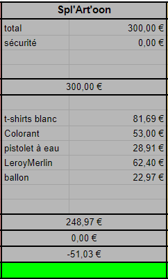

.jpg)
Cet évent est inspiré du jeu vidéo splatoon. Nous avons recrée une aire de combat dans la zone de barbecue avec des palettes pour faire des baricades. Nous avons acheté des pistolets à eau piston, du colorant alimentaire. Comme dans le jeu il fallait alors peindre l'équipe adverse.
Le premier jour choisit pour l'activité était un lundi mais nous pouvions prévoir un mois avant la pluie. Heureusement nous avons pu décaler l'activité au jeudi suivant. Une partie (les 3 manches) durait environ 1 heure et regroupait 2 équipes de 4 à 5 joueurs. Nous avons 4 créneaux de disponibles (plus des créneaux pour les gens de BDA aussi). Les créneaux ont très vite tous été sg. C'est un évent réussi, nous avons eu le nombre de gens attendus et l'évent leur a bien plus.
Pour la peinture, nous avons acheté du colorant alimenraire orange et vert au Métro, afin de pouvoir peindre les gens sans aucun problème de toxicité. Nous avions des pistolets pistons au local BDA, nous en avons acheté d'autre afin de compléter l'arsenal pour que chaque joueur en ai un. Nous avons acheté 30 t-shirts blancs sur internet, afin que les joueurs n'aient pas à salir leur propres affaires (sinon ils ne seraient jamais venu jouer). Nous avons acheté des petits ballons de bombes à eau, ainsi qu'un petit kit à bombe à eau afin d'avoir un embout pour les remplir 10 par 10. Enfin,nous avons acheté des tendeurs au Leroy Merlin afin de fabriquer des canons à bombes à eau
.jpg)
Pour les barricades, nous avons récupéré les palettes dans un magasins de livraisons de Saint-Etienne. Pour faire une barricade, nous avons simplement fixé les plaques de cartons sur les palettes, ainsi que le papier mur brique restant des campagnes BDS. Nous avons fabriquer un tank à taille humaine en carton qui se déplacait sur roulette. Des décors des personnages et poulpes de splatoon ont été réalisés. En plus des petites bombes à eau, nous en avons gonfler des grandes, avec des ballons de baudruches de tailles normales. Les petites bombes à eau pouvait se tenir dans le main en mode grenade. Nous avons essayé de fabriquer les canons avec les tubes en pvc et tendeurs mais sans succès. Nous voulions fabriquer des reserves portatives, mais finalement nous avons décidé d'en mettre des fixes à différents endroits de l'arène.
.jpg)
.jpg)
Le jeu était organisé de la manière suivante: 2 équipes de 4 membres qui s'affrontait au cours de 3 manches différentes. Chaque équipe avait une base, où se trouvait la réserve d'eau coloré pour recharger les pistolets. Il était interdit d'aller dans la base adverse. Des staffeurs lancaient de temps en temps les grosses bombes à eau depuis le deuxième étage pour faire peur au joueur.
La première manche consistait à peindre les t-shirts (tout propre à ce moment là) de l'équipe adverse en un temps limité. L'équipe qui était la plus recouverte de la peinture de l'équipe adverse perdait.
Pour la seconde manche, chaque joueur était équipé de 5 vies. Lorsqu'un joueur était touché, il perdait une vie. La dernière équipe en jeu gagnait la manche. Les staffeurs comptaient les vies perdu. Une foi touché, le joueur devait retourner à sa base (pour ne tirer sur l'adversaire qui venait de vider son chargeur sur lui). Les petites réserves d'eau situés dans l'arène pouvait être utiliser dans cette manche (il n'y avait plus besoin que l'eau soit colorée).
Pour la troisème manche, il fallait amener le tank dans la base adverse. Des staffeurs étaient dans le tank et s'occupait de son déplacement. Pour bouger le tank, il fallait avoir plus de membres de son équipe que de membre de l'équipe adverse proche du tank. 2 joueurs par équipe était équipés de pistolet à eau piston. Les deux autres était équipes des petites bombes à eau, comme des grenades (50 bombes à eau par équipes). Si une équipe n'avait plus de bombes à eau, alors les deux grenadiers quittaient la partie (pour les forcer à être stratégiques).
Voici le budget de l'évent:
Il a couté un peu chère à cause de l'achat de l'ensemble du matériel (t-shirt, pistolet, colorant, ...). Nous avons dépensé 51,03€ de moins que prévue, nous avons donc respecté le budget alloués à l'évent.
Une partie du matériel achetée est toujours présent dans le local BDA (pistolet à eau, t-shirt blacn, ...).
